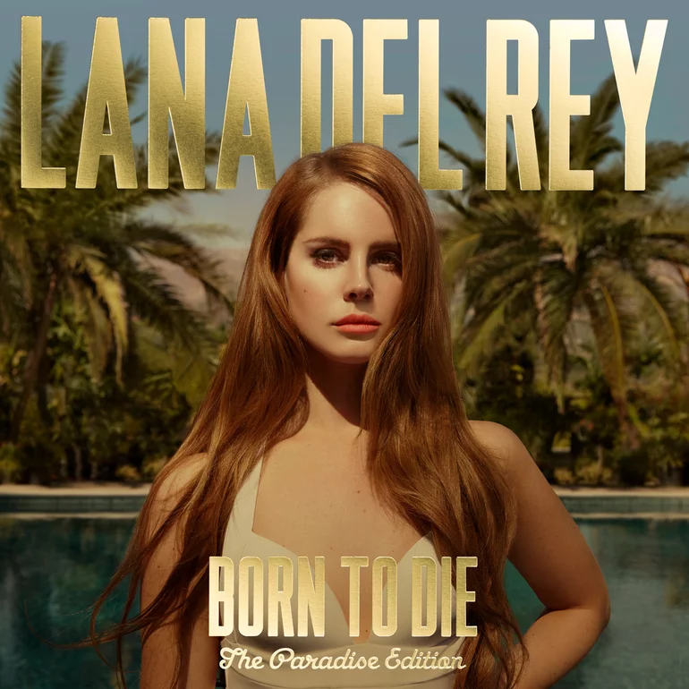

Harry Styles: Fine Line
El album "Fine line", publicado el 13 de diciembre de 2019 por Harry Styles, pertenece al genero de
Pop rock y contiene las siguientes canciones:
- Golden
- Adore You
- Cherry
- To be so Lonely
- Sunflower, vol. 6
- Treat People With Kindness
- Watermelon Sugar
- Lights Up
- Falling
- She
- Canyon Moon
- Fine Line

Taylor Swift: Folklore
El album "Folklore", publicado el 24 de julio de 2020 por Taylor Swift, pertenece al genero de
Chamber Pop y contiene las siguientes canciones:
- the 1
- the last great american dinasty
- My tears Ricochet
- seven
- this is me trying
- inivisible string
- epiphany
- peace
- cardigan
- exile
- Mirrorball
- august
- illicit affairs
- mad woman
- betty
- hoax

Jhay Cortez: Timelezz
El album “timelezz” publicado el 3 de septiembre de 2021 por Jhay Cortez, pertenece al genero de trap
y contiene las siguientes canciones:
- dilema
- esta dejá
- los rompediskoteca
- Mi vicio
- Nos matamos
- Los bandoleros
- Dile
- Los bo
- Eternamente
- Tokyo
- Ley seca
- En mi cuarto
- Dale como es
- Ropa interior
- Me extraña
- Christian Dior
- Kobe en LA 2.0

Myke Towers: Easy money baby
El album “Easy Money Baby”, publicado el 24 de enero de 2020 por Myke towers, pertenece al genero de
trap y contiene las siguientes canciones:
- MIB
- tu
- Parcerita
- una noche mas
- si se da
- fugaz
- LVCC
- La playa
- Relacion rota
- Girl
- Viral
- Diosa
- Hechizo
- Piensan
- Tiene que saber
- Otro
- Ronca
- Funeral

Olivia Rodrigo: Sour
El album "Sour", publicado el 21 de mayo de 2021 por Olivia Rodrigo, pertenece al genero de Pop Rock
y contiene las siguientes canciones:
- brutal
- drivers license
- deja vu
- enough for you
- jealousy, jealousy
- 1 step forward, 3 steps back
- Good 4 U
- happier
- favorite crime
- hope ur ok

Lana Del Rey: Born To Die
El album "Born To Die", publicado el 27 de enero de 2012 por Lana del Rey, pertenece al genero de Pop
y contiene las siguientes canciones:
- Born To Die
- Blue Jeans
- Diet Mountain
- Dark Paradise
- Carmen
- Summertime Sadness
- Off To The Races
- Video Games
- National Anthem
- Radio
- Million Dollar Man

Artic Monkeys: AM
El album "AM", publicado el 9 de septiembre de 2013 por la banda "Artic Monkey", pertenece al genero
de Indie Rock y contiene las siguientes canciones:
- Do I Wanna Know?
- One for the Road
- I Want It All
- Mad Sounds
- Why´d You Only Call Me When You Are High?
- Knee Sock
- R U Mine?
- Arabella
- No. 1 Party Anthem
- Fireside
- Snap Out of It
- I Wanna Be Yours

Ozuna: Odisea
El album "Odisea", publicado el 25 de agosto de 2017 por Ozuna, pertenece al genero de Regueton y
contiene las siguientes canciones:
- Odisea
- Tu Foto
- Se preparó
- Cumpleaños
- Dile que tu me quieres
- Egoista
- Una flor
- Quiero repetir
- Noches de aventura
- Pide lo que tu quieras
- Siguelo bailando
- Bebe
- El fasrante
- No quiere enamorarse
- Carita de angel
- Si no te quiere